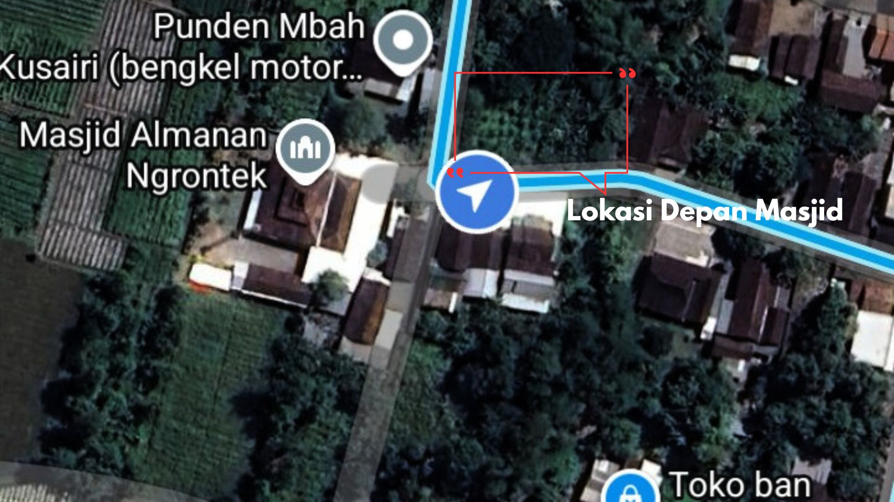
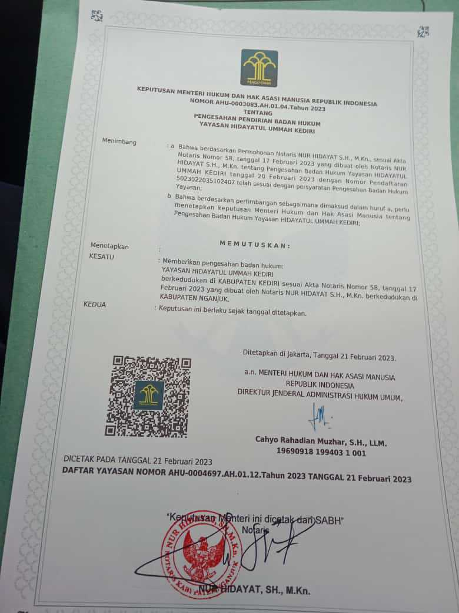

Peta Jalan Pengembangan (Development Roadmap)
Tahap 1
Fondasi & Konstruksi
- Pengadaan lahan 1.170m² di samping Masjid Al Manan.
- Pembangunan Asrama Yatim & Ruang Belajar Tahfizh.
- Legalitas & Administrasi Negara.
Tahap 2
Aktivasi Operasional
- Rekrutmen Tenaga Pendidik & Pengasuh Profesional.
- Implementasi Kurikulum Tahfizh & Pendidikan Formal.
- Penjaminan Kebutuhan Pangan & Kesehatan Anak.
Tahap 3
Keberlanjutan & Mandiri
- Pemeliharaan Berkala Sarana & Prasarana.
- Pengembangan Unit Usaha Mandiri Yayasan.
- Kepastian Keberlangsungan Organisasi (Endowment Fund).
Estimated Budget Phase 1 (Land & Building)
Official Target: $87,353| Alokasi Dana | Rupiah (IDR) | USD (Approx) |
|---|---|---|
| Land Acquisition (1.170 m²) | Rp585.000.000 | $34,412 |
| Construction & Infrastructure | Rp800.000.000 | $47,059 |
| Target Total Phase 1 | Rp1.485.000.000 | $87,353 |
Donation Methods
DONATE VIA PAYPAL
Official Bank Account (BRI)
6254 0103 4128 532
MOH SAEFULLOH
SWIFT CODE: BRINIDJA (BRI UNIT BANYAKAN)
INDONESIAN LOCAL DONATION (DANA)

Scan and Verify to Moh. Saefulloh
Legal Status
KEMENKUMHAM RI LICENSE:
AHU-0003083 AH.01.04.TAHUN 2023
Project Location



"Desa Gambyok, Grogol, Kediri - Proyeksi Pembangunan Pesantren di Samping Masjid Al Manan"